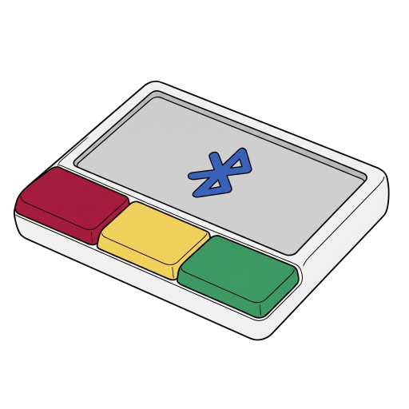
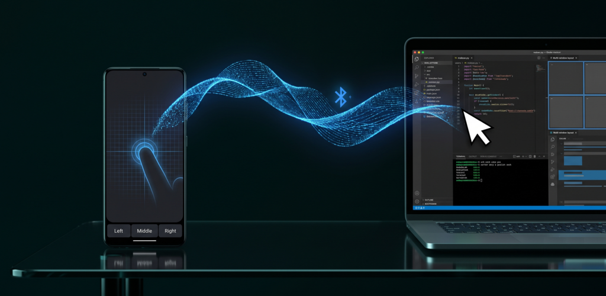
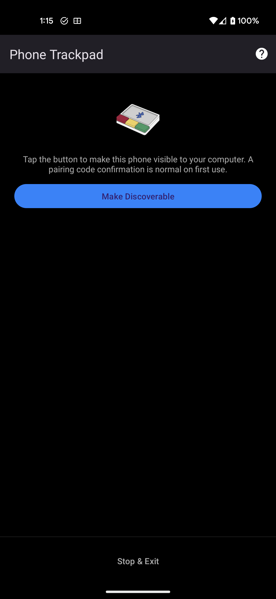
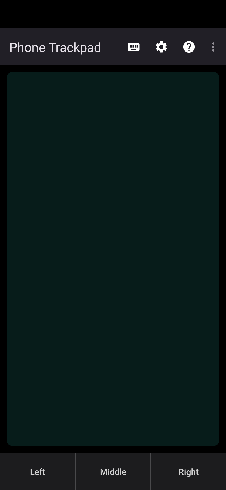
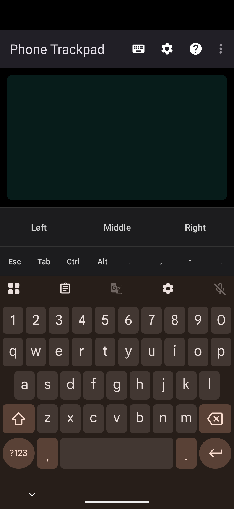
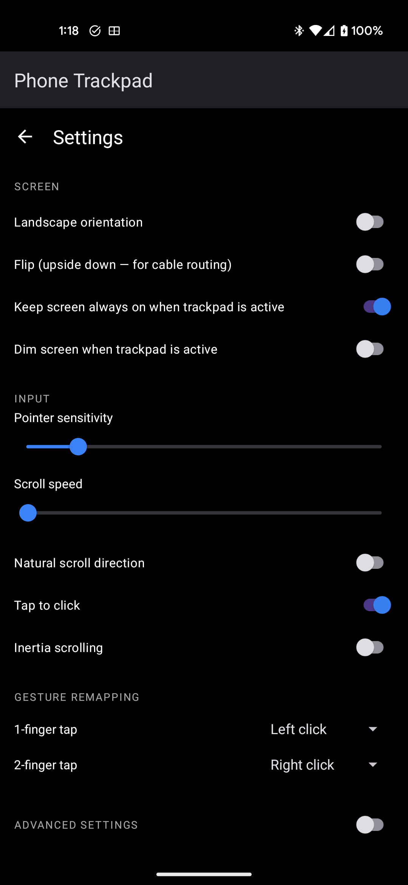
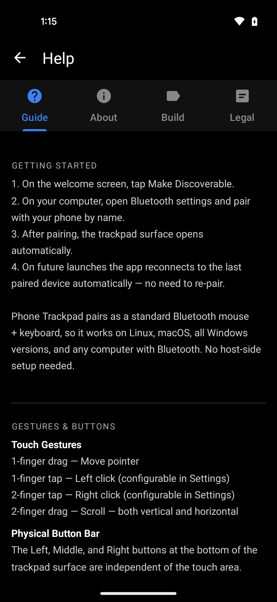
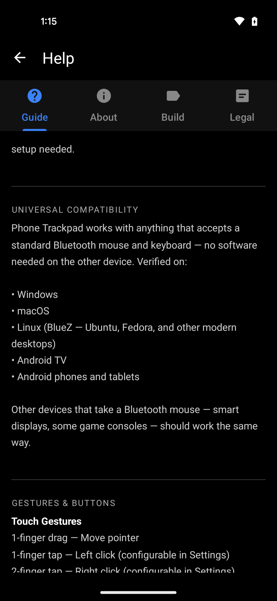

Phone Trackpad
Turn your Android phone into a Bluetooth trackpad, mouse and keyboard for any computer — with nothing to install on the computer.

What it is
Phone Trackpad presents your phone to the computer over Bluetooth Classic as a standard HID device — the exact same protocol every commercial Bluetooth mouse and keyboard uses. The computer sees a generic Bluetooth mouse and keyboard and uses its own built-in drivers.
That means no app, no daemon, no driver and no account on the host machine. You pair once from the computer's normal Bluetooth settings, exactly as you would pair a real mouse, and it works. Nothing is routed through the internet: the link is a direct, point-to-point Bluetooth connection between your phone and your computer.
Use cases
Media PC on the TV
Control a living-room computer or Android TV box from the sofa without a wireless mouse rolling off the armrest.
Presentations
Advance slides and point at things from anywhere in the room, using the phone already in your hand.
Broken or missing trackpad
A dead laptop trackpad or a lost mouse dongle stops being an emergency. Pair the phone and keep working.
Travel and cramped desks
One less thing in the bag. Useful on a plane tray table, a café table, or a hot desk with no room for a mouse.
Lab, server and kiosk machines
Machines you touch occasionally and don't want to keep a dedicated mouse for. No software may be installed on them — and none has to be.
Typing on a host without a keyboard
Keyboard mode sends real key presses over the same link, including Esc, Tab, arrows and Ctrl / Alt / ⊞ Win combinations.
Screenshots






Features
- Mouse and keyboard over one link — a single composite HID profile carries pointer, buttons, scroll and key presses.
- Full gesture set — one-finger move, tap to click, two-finger tap and two-finger scroll, with a dedicated left / middle / right button bar for precision work.
- Remappable gestures — assign left, right, middle click or nothing to each gesture.
- Tuned pointer feel — sub-pixel accumulation, smoothing, pointer acceleration and flick inertia, all adjustable.
- Portrait, landscape and flipped orientations, so the phone can sit whichever way is comfortable.
- Auto-reconnect — reconnects to the last paired computer, and recovers when Bluetooth is toggled off and back on.
- Screen-friendly — the trackpad surface runs dark with the backlight dimmed to save battery.
- Offline by design — no analytics, no telemetry, no accounts, no ads. The app's input path uses no network at all; the only component that touches the internet is Google Play Billing, and only if you choose to tip.
Known limitations
Stated plainly, so nobody buys into something it isn't:
- Bluetooth latency is roughly 10–30 ms, against under 5 ms for a wired mouse. Fine for everyday work; not suitable for competitive gaming.
- Pairs as a standard mouse and keyboard, so there is no pinch-to-zoom or multi-finger OS gesture support, and no pressure sensitivity.
- No palm rejection — resting a hand on the surface will move the pointer.
- Keyboard mode assumes a US-QWERTY layout on the host. Other layouts may receive the wrong punctuation and symbols.
- One connected computer at a time; switching requires disconnecting first.
- Horizontal scroll needs Windows 10+, macOS 10.15+, or a modern Linux desktop.
- Bluetooth range is around 5–10 m, reduced by walls and interference.
Compatibility
| Host computer | Verified on Windows, macOS, Linux (BlueZ — Ubuntu, Fedora and other modern desktops), Android TV, and Android phones and tablets. Other devices that accept a standard Bluetooth mouse — smart displays, some game consoles — should work the same way. No software is installed on the host. |
|---|---|
| Phone | Android 9 (API 28) and newer, with Bluetooth Classic HID support. Works on phones and tablets. |
| Connection | Bluetooth Classic HID, point-to-point. No Wi-Fi, no internet, no server in the middle. |
Pricing and payments
Phone Trackpad is free. Every feature is available without paying, without an account, and without ads. There is no subscription, no trial period, and no locked functionality.
The app includes an optional tip jar for users who want to support continued development. Tipping is entirely voluntary and changes nothing about how the app behaves — no feature is gated behind it.
| Tip | India | Other countries |
|---|---|---|
| Small tip | ₹49 | US$0.99 |
| Medium tip | ₹99 | US$2.99 |
| Large tip | ₹249 | US$4.99 |
How payments are processed: all in-app payments are handled end-to-end by Google Play Billing. Phone Trackpad never sees, collects, stores or transmits any card number, UPI ID, bank detail, billing address or other payment information. The app receives only a confirmation flag that a purchase completed. Google Play acts as the merchant of record for these transactions.
Refunds and cancellation
Because the app is free, there is nothing to cancel and no recurring charge to stop. Uninstalling the app ends your use of it entirely; no account or data remains anywhere.
For the optional tip purchases:
- Refunds are handled by Google Play, the merchant of record. Requests can be made through Google Play's refund process, which allows self-service refunds within 48 hours of purchase.
- Outside that window, email bhu@chmod.in with the Google Play order ID. Refund requests for accidental or duplicate purchases are supported and will be raised with Google Play as promptly as possible.
- Approved refunds are returned by Google Play to the original payment method, on Google Play's standard refund timelines. How long the money takes to appear depends on the payment method and the issuing bank.
- There are no partial refunds, since tips are single one-time amounts.
Privacy and data
Phone Trackpad collects no personal data. There is no analytics SDK, no telemetry, no advertising identifier and no account system. Nothing you do on the trackpad or keyboard leaves your phone except as Bluetooth input to the computer you paired with. Bluetooth permissions exist solely to present the phone as a HID device and to send input to your paired computer.
Full details, including a per-permission breakdown: Phone Trackpad Privacy Policy.
Terms of use
Phone Trackpad is provided as-is for personal and professional use as an input device. By installing and using the app you agree to the end-user licence agreement shown on first launch inside the app, which is also reproduced in the app under Help → Legal. In summary:
- The app is licensed for personal use, not sold. Redistribution, modification, or commercial use without written permission is prohibited.
- The app is provided as-is, without warranty of any kind, to the maximum extent permitted by applicable law. Your sole remedy for dissatisfaction is to stop using it.
- Bluetooth behaviour varies between host operating systems and Bluetooth chipsets. Uninterrupted operation, and compatibility with any specific computer, are not guaranteed.
- Android may restrict or terminate the app at any time to conserve battery or memory; this is outside the developer's control.
Support and contact
Support is provided by email, and every message gets a reply.
| Support email | bhu@chmod.in |
|---|---|
| Bug reports | bhu@chmod.in — subject line Phone Trackpad Bug |
| Feature requests | bhu@chmod.in — subject line Phone Trackpad Feature |
| Developer site | bhuvaneshne.github.io |
Developer details
| Published by | Bhuvanesh N E — individual developer (sole proprietor) |
|---|---|
| Location | Bangalore, Karnataka, India |
| Contact | bhu@chmod.in |
| Application ID | io.github.bhuvaneshne.apps.phonetrackpad |
| Distribution | Google Play Store — store listing. This is the only official distribution channel; the app is not published on any other store or download site. |
| Category | Tools / Productivity |
| Payments | All in-app payments are processed by Google Play Billing. No payment details are collected, stored or processed by this app or its developer. |